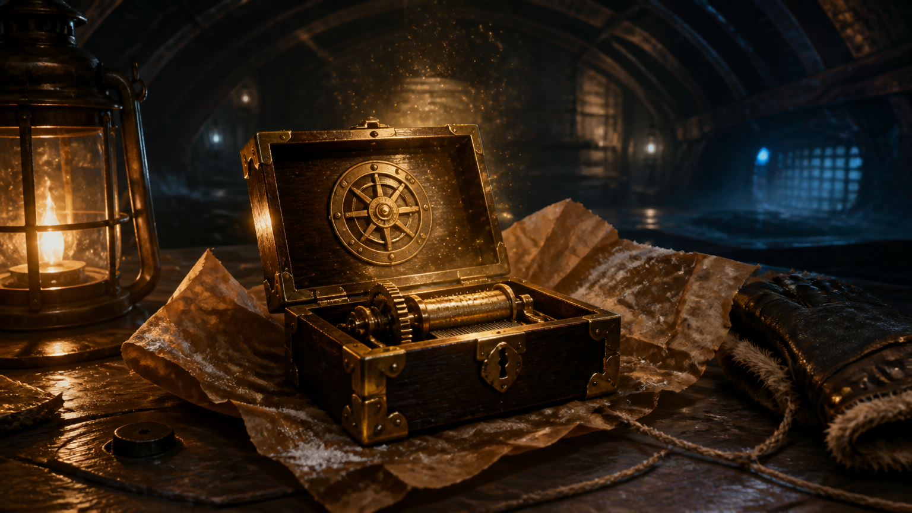
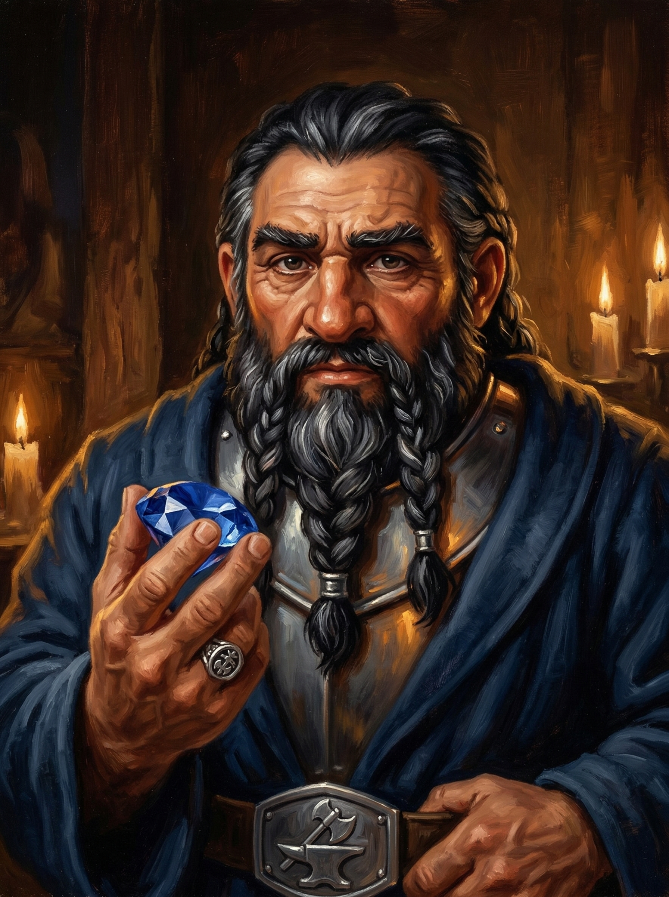
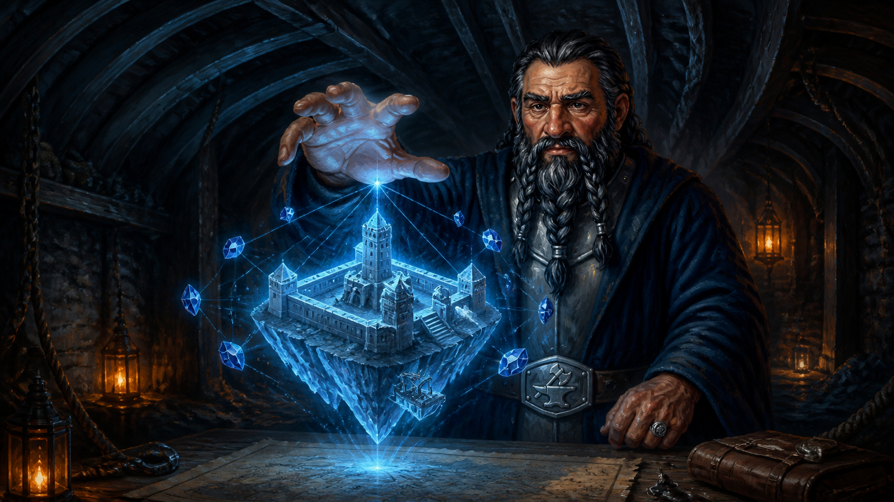
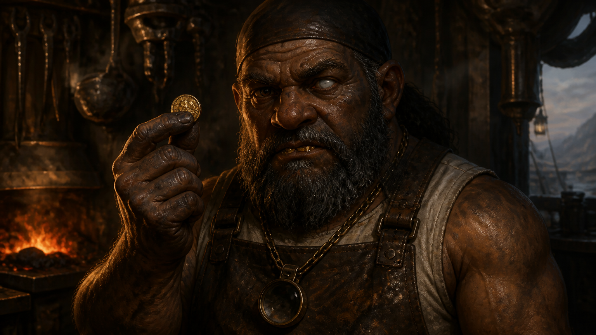
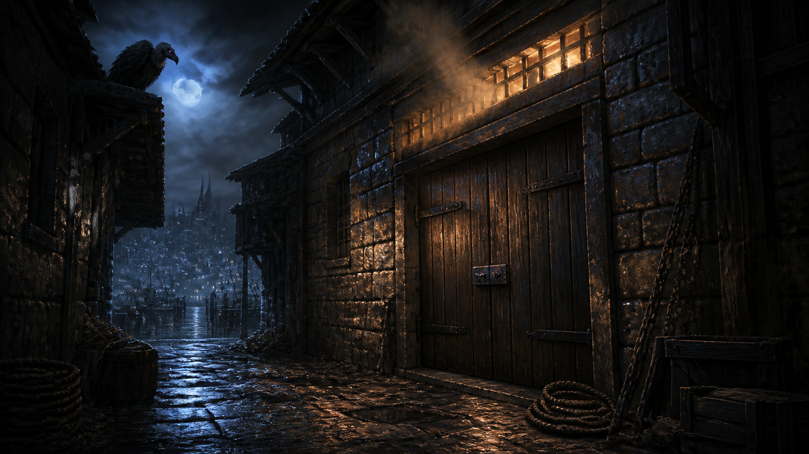
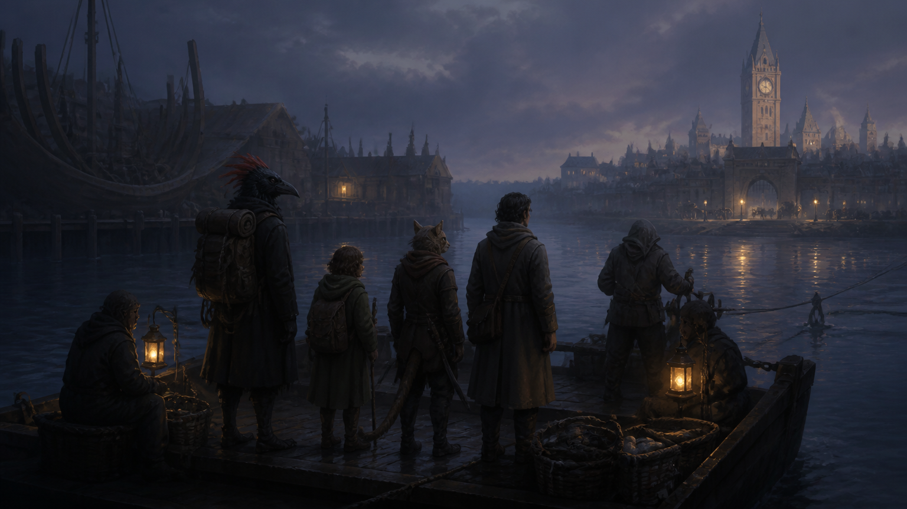

Session 7: The Weight of Stars — Prisoner 13
Date: July 24, 2026
Location: Varkenbluff — Drydock Cellar, Industrial Waterfront, the Bridge Gate
Adventure: Prisoner 13 (Keys From The Golden Vault)
Previously...
The crystals came down and the Fragment of Krokulmar died screaming in a language older than sound. Markos Delphi was pulled out from underneath the thing that had been wearing him — alive. Edmund woke with ten human fingers. Elra Lionheart stood at parade rest one last time at the edge of the forest and let the morning light take her, and she will not be coming back. In Varkenbluff, Vasil Talistrome took the Celestial Codex in trembling hands and embraced the student who stole it from him.
Five hundred and fifty gold each. Rowan's gear gone from the Drydock with a note in Thieves' Cant — taking a job up north. And under every rib at that table, a second heartbeat, a half-beat out of rhythm, that has not gone away since.
Act 1: The Box That Was Not There Last Night
Day five at the Drydock Cellar. Three days of quiet. On the war table, where there had been a tide chart and a dented spyglass, there was now a small lacquered box and a key of soft gold — and that box should have been through the low arch and down in the sea chest under three locks. The tide hatch was latched from the inside. Whoever set them there did not come down the stair.

Then the lid unlatched itself.
“A prisoner in Revel's End — an arctic penitentiary at the edge of the world — has sent us a coded message. Prisoner Thirteen was a Zhentarim spymaster. She claims to hold the key to a vault containing something of great importance.”
“Infiltrate Revel's End. Make contact. Obtain what she is offering. This is information extraction. NOT a jailbreak.”
“One concern. Communications from Revel's End have become irregular. Guard reports arrive late. Cargo manifests do not reconcile.”
And in the gap in the song, up on the boatyard floor: boots. Unhurried, heel then plank, crossing the length of the yard and stopping directly above the war table. Directly above the box. Long enough for three full drips off the hull. Nobody up there said anything.
“Something is not right inside those walls. Your client waits above. He is a dwarf, he is patient, and he is paying. Dress warmly.”
The song ran down. The key was simply not there between one blink and the next.
Act 2: The Breaker's Map

Varrin Axebreaker came down the ladder in a dark blue wool robe thrown over a steel breastplate he clearly did not expect to need and did not leave behind regardless. Broad through the shoulders in the way of shield dwarves grown soft from council chambers rather than mine work. A silver buckle at his belt — a broken axe over an anvil. He took the room in before he took the party in.
“We have an audience, I think. Boots on the yard floor, twice since I arrived — before you opened that hatch and after. Dockhands, perhaps.” “Perhaps not. I did not walk half of Luskan to be followed the last hundred feet.”
His clan's wealth — not just coin, but records, lineage, three centuries of who they were — is sealed in a vault beneath Gauntlgrym. The lock is one woman's design. Korda Glintstone. Prisoner Thirteen.
He turned his hand over above the war table and Revel's End stood a foot high in cold blue light: one low hexagonal building, a single storey, crouched flat against the ice, with a tower rising from its middle and sheltering behind a blade of black stone called the Windbreak.

“A panopticon. One floor, six sides, and every corridor sighted from the tower at its heart — the design is the point. There is nowhere inside those walls a man may stand and not be looked at.”
“Prisoners are numbered, not named. And the cells themselves are warded. Antimagic, permanent, one field to a cell. Whatever your halfling carries in his blood or your kenku carries in his mind, it stops working the moment you step through those bars.”
On Korda, he was honest about his own failures: eleven years, councils, locksmiths, two wizards of some reputation and one who kept the fee. Envoys sent to ask her plainly.
“She met them, she was courteous, and they came back with nothing at all — which I am told is what she does. She will talk for an hour and you will leave lighter than you arrived, and not know what you paid with.”
“Cell thirteen. No cellmate. That is not a kindness — it is that no one has been willing to share it with her.”
Pressed on the cover identities, he laid out four sets of papers — squared, the way a quartermaster lays out an inventory. Kenku, halfling, tabaxi, human. Ministry seals seated properly. Ink genuinely aged. The small crooked tear of a real document that has ridden in a real satchel through real weather.
These were not forgeries done in a week. These were not forgeries at all.
“The papers are honest. That is all you need of it.”
And then, for the first time all night, he looked away first.
Act 3: The Fence

Ten days to the ice. A Lords' Alliance checkpoint at the other end, where staff get searched thoroughly, because staff is how everyone has ever tried to get in. And nine thousand gold in Afterlife Casino coin sitting in the sea chest with Mammon's mint-mark on every piece.
Slim pulled the brass hammer token in front of their client. A seam in the back wall that nobody remembered being a door let in grey light and colder air, and Igor Irontongue stepped through it like the wall owed him passage.
“Arcane Mint. Mammon's sigils. Afterlife Casino. I know this stamp.”
“Flux bath. Dispelling crucible. Re-strike. Seven days for the batch — ten if the sigils run deep. Twenty percent. Standard rate.”
Blood Feather talked him down — not by pleading, and without once mentioning the leverage he actually had. One batch, one mint, pre-sorted. And thirty days of quiet use of nine thousand gold, unchased, from people who physically cannot chase it.
“Thirty days of float.” “You are not wrong.”
“Fifteen. Not because I like you, and not because the halfling and I are square. Because that was an honest argument and I am not in the business of pretending I did not hear one.”
The rate changed. Nothing else did.
“I can clean the metal. I can't clean the ledger. Mammon keeps his books. Every coin that passes an Arcane Mint gets logged — where it went, who spent it. I strip the mark. I don't strip the memory.”
“Don't spend in clusters. Don't flash. And stay away from anyone with an infernal patron.”
His good eye found Slim on that last line and stayed a half-second longer than a stranger's courtesy requires. He did not ask what patron. He did not explain the look.
Slim tipped his hat to him on the way out. Igor stopped in the seam — and used a name, the only time all morning he used anyone's.
“Pickens. Come back for your money.” “I would rather not be holding it.”
Act 4: The Contract
Blood Feather picked up the unsigned contract and argued that a tenth share of a vault sealed for eleven years is not unfair — it is hypothetical. A tenth of a sealed vault and the whole of a sealed vault come to the same figure. And four people walking a Lords' Alliance checkpoint on paper that will not survive a determined question would not get the trial Korda got.
“You have not said one thing that is untrue. That is the difficulty with you. Igor had the same trouble.”
“A fifth part is my floor and I will not reach it today, because you have not made me. A seventh — call it fifteen in the hundred — and it is written before you sign rather than promised after.”
The wax took the signet clean: a broken axe over an anvil. Varrin read the whole thing back aloud, unhurried, which is not distrust — it is how his people close a thing. Then he pushed the sapphire across the oak.
“The breaker's map. Every wall my coin could buy the shape of, and it is yours until you come back. It will not show you anything living, so do not trust it to tell you where a guard is standing.”
“A deal struck is a deal kept. Bring me the key. If you cannot bring me the key, come back anyway and tell me why to my face, and I will still call it honest work.”
Act 5: The Door on the Row
Slim sent his vulture after their client.
Varrin walked — no guard, no coach. He stopped once in the warehouse row east of the piers, at a door with no sign over it and fresh iron on old hinges. He knocked a pattern — two slow, three fast, one after a gap just long enough to be a decision — spoke through the door to somebody who did not open it, and did not go in. He stood a moment afterwards with his hand flat on the wood. Then he took a two-copper room over a taproom on Gullet Street, which is not where a clan lodges its representative.
Blood Feather heard the knock once and had it. A kenku does not approximate a sound.
That night, Slim watched the door for two hours through the vulture's eyes.

The lane was dead. Not quiet — dead. Two hours on a working waterfront and nobody cut through, which means somebody made it known it was not a way through. Lamplight walked the length of the building and back, three circuits, timing barely varying. And once, forty minutes in, a man came up the lane and rapped a blunt flat two — nothing like Varrin's pattern — and turned sideways through a hand's-width gap that let warm air curl out against the cold.
Somebody was heating that building. All night. In a row where every other warehouse is as cold inside as out. Nobody banks a fire for crates.
Then the shadow on the glass broke — three times — low and further in, something that shifted and settled and never travelled with the walking light. And under the hearth-smell coming out of that gap: the flat sour note of a room people have been inside of, without leaving, for days.
The Drydock was very quiet when he finished telling them.
Act 6: Barred From the Outside
They did not go down that lane. They rigged their own home instead — three flasks of alchemist's fire. One on a waxed line off the tide hatch bar, to drop four feet onto the war table. One on a tin pressure-tongue at the mouth of the bilge pipe. And one at Blood Feather's roost, fifteen feet up in hull-ribs that have been drinking tar since before either of them was born.
Beside that last one, Blood Feather laid out coin from his own hoard and three glass beads — arranged, in the open, where they would catch what little light gets up there. Anybody good enough to get past the hatch and the pipe is good enough to be worth paying. Take the shiny. Go home. Nobody has to be on fire about it.
Slim looked at the coins. Then at the flask sitting eighteen inches away. A bribe and a bait are the same object, and the only difference is what is sitting next to it.
They barred the hatch from the outside — a strange thing to do to your own home — and crossed the river on the cable ferry before first light, with the waterfront pulling back into one low dark shape behind them and one building in it warmer than all the others.

Ahead: the clock tower catching the first grey, the Bridge Gate, and a coach with its lamps already lit and a dwarf standing beside it who had clearly been there a while.
Session Summary
| Party | Blood Feather (Kenku Rogue/Soulknife) · Slim Pickens (Halfling Rogue/Warlock) · Capt. Kiara Tawny (Tabaxi Fighter) · Maltus Draught (Human Cleric of Trickery) |
| Job | Infiltrate Revel's End, make contact with Prisoner 13, obtain the vault key. Information extraction — not a jailbreak. |
| Contract | 250 gp/PC on delivery, plus 15% of all coin recovered from the Gauntlgrym vault (negotiated up from 10%). Clan records excluded. Passage and arctic kit prepaid. |
| Covers | Galley: Maltus, Blood Feather · Relief guard: Kiara, Slim — aboard the Jolly Pelican, Luskan berth eleven |
| Laundering | 9,000 gp marked coin with Igor at 15% — 7,650 gp clean, released only on their return |
| MVPs | Blood Feather (two negotiations, both won on argument alone) · Slim (the vulture, the tail, and a natural 20 on the watch) |
| Acquired | The breaker's map (sapphire) · four sets of genuine papers · one knock |
| Left Behind | Three armed flasks, a handful of coin on a roost, and a question nobody asked |
Next Time...
Six days of coast road to Luskan. Ten days from the pier to the ice. Four names to learn well enough to answer to in your sleep.
And behind them, in a heated warehouse on a lane that nobody walks down, four people the party has not met are waiting for a ship they are not going to be on.
“The papers are honest. That is all you need of it.”
— Varrin Axebreaker